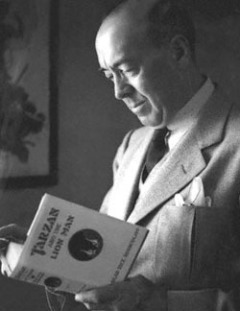

dgar Rice Burroughs (01 Tháng Chín năm 1875 - 19 Tháng 3, 1950) là một tác giả người Mỹ, nổi tiếng với những tác phẩm về người rừng Tarzan và những cuộc thám hiểm của anh hùng John Carter trên Hỏa tinh.

Một nhân vật đã trở nên nổi tiếng trên toàn thế giới.Một nhân vật đã trở thành một biểu tượng văn hóa.
Những cuốn sách về nhân vật này đã được dịch ra trên 50 ngôn ngữ.
Hàng loạt phim ảnh, truyện tranh và chương trình truyền hình được dàn dựng theo hàng thập kỷ qua.
Đó là Tarzan.
Trong một khu rừng rậm hoang dã châu Phi, cậu bé Tarzan được con vượn cái Kala trong bầy của vượn đầu đàn Kerchak đem về nuôi. Ở đó, để sống sót, cậu phải học được những bí mật của tự nhiên hoang dã: cách nói chuyện với các con vật khác, đu bám giữa rừng cây, và chiến đấu chống lại những con thú ăn thịt to lớn hơn. Cậu lớn lên, trưởng thành và trở thành một con vượn khỏe mạnh, dũng cảm. Nhưng trong lúc này, trí thông minh của con người tiềm ẩn trong cậu cho thấy khả năng thống lĩnh bầy đàn của cậu. Cậu thực sự trở thành Vua của rừng xanh.
Nhưng những con người đã tiến vào khu rừng nơi Tarzan ở. Mang theo họ là sự tàn bạo, xảo trá, tham lam của thế giới văn minh - Nhưng họ cũng mang theo người phụ nữ da trắng đầu tiên mà Tarzan nhìn thấy. Giờ đây, Tarzan phải chọn lựa, một trong hai thế giới...
Tóm tắt nội dung:
Trên đường đi công tác huân tước Clayton và vợ - Alice bị bỏ lại trên đảo hoang. Sau một tai nạn bất ngờ, cả hai cùng qua đời bỏ lại đứa con trai mới ba tháng tuổi. Cậu bé được một con vượn nuôi dưỡng và đặt tên là Tarzan.
Một lần tình cờ, một số người da trắng đã bị ép vào đảo hoang, nơi Tarzan sinh sống. Chàng trai hoang dã lần đầu tiên tiếp xúc với những người đồng loại, lần đầu tiên có cảm xúc như con người nhưng đã phải vội xóa nhòa, vì Jane - cô gái chàng yêu đã nhận lời cầu hôn của chính anh họ chàng. Vì người con gái ấy, chàng quyết từ bỏ tước vị cũng như nguồn gốc chính thống của mình. Nhưng cũng vì người con gái ấy, chàng đã từ bỏ cuộc sống hoang dã, học cách trở lại thành một con người. Dưới sự giúp đỡ của Pôn, chàng đã tìm được một công việc tương đối phù hợp với tính cách của chàng, được đi khắp nơi, được quen biết nhiều người. Những mối quan hệ mới giúp chàng kết giao được với nhiều bạn bè, nhưng cũng chuốc lấy không ít kẻ thù. Gặp lại Jane, sau một loạt những biến cố kinh khủng, cuối cùng hai người đã trở thành vợ chồng và Tarzan trở lại thành huân tước Clayton.
Kẻ thù không ngừng bám đuổi Tarzan, chúng âm mưu bắt cóc con trai chàng để mang bán cho một tộc ăn thịt người. Để cứu con, hai vợ chồng Tarzan lại một lần nữa lại dấn thân trở lại rừng già. Cuối cùng, đứa con của rừng xanh vẫn tiếp tục chiến thắng, tiếp tục bảo vệ tốt gia đình mình.
Phần II của Tarzan lại nói về số phận của đứa con trai chàng - Jack. Một dịp tình cờ, Jack được gặp Acut, con vượn cũ bạn bè của cha mình, và bị cuốn vào một số rắc rối khủng khiếp, để rồi chàng trai đã tiếp nối cha mình trở thành một đứa con của rừng già. Sau hàng loạt những biến cố, cuối cùng, Tarzan cũng tìm được con trai mình trở về, và lại nhận thêm được một đứa con gái. Có lẽ từ nay cuộc sống của chàng mới tương đối bình thường.
Tarzan là một tiểu thuyết cực kỳ nổi tiếng của nhà văn Mỹ Edgar Rice Burroughs, đã từng được dựng thành phim truyện, phim hoạt hình, với hàng chục phiên bản khác nhau, dù thế nào cũng được hoan nghênh nhiệt liệt. Xét cho đến cũng, điều đó là dễ hiểu. Vì chàng Tarzan đáp ứng đầy đủ hết những mơ ước của các cô gái trẻ. Còn gì lãng mạn hơn khi đang nằm chờ chết trên một cái bàn hiến tế, khi con dao sắc nhọn kề vào cổ, bỗng dưng người đó xuất hiện, chỉ với hai bàn tay trần thịt có thể phá tan được tất cả. Khi xã hội ngày càng dựa vào máy móc, con người trì trệ và phì nộn vì lười hoạt động, rồi sự bình đẳng ngày càng rõ tới mức đàn ông từ chối giúp đỡ phụ nữ, thì còn ai đáng được ngưỡng mộ hơn chàng Tarzan, người hùng chỉ một ngọn giáo cỏn con cũng dám đối mặt với Sư tử, với hổ báo lang sói.
Đôi lúc giữa câu truyện, chúng ta bắt gặp những suy nghĩ của Tarzan về thế giới con người. "Không những thế, trước mắt chàng bây giờ, những người này lại hành động tồi tệ hơn cả đàn vượn. Họ còn man rợ hơn cả sư tử Sabo. Loài người cũng chẳng có gì đáng trọng!" Khi đã từng sống một cách tự do thỏai mái trong thế giới rừng già, khi mọi việc được giải quyết minh bạch dựa trên thực lực của mỗi người, thì người ta không khỏi hoài nghi về cái gọi là thế giới con người, cái thế giới mà lẽ phải nhiều khi là một điều khá khôi hài.
Tất nhiên không thể đánh đồng tất cả. Và triết lý của Burroughs khá rõ ràng. Dù lớn lên ở đâu đi chăng nữa, thì nguồn gốc vẫn là thứ người ta không thể chối bỏ. Và chỉ cần nơi đâu có những người yêu thương ta, đó sẽ chính là nhà của ta.